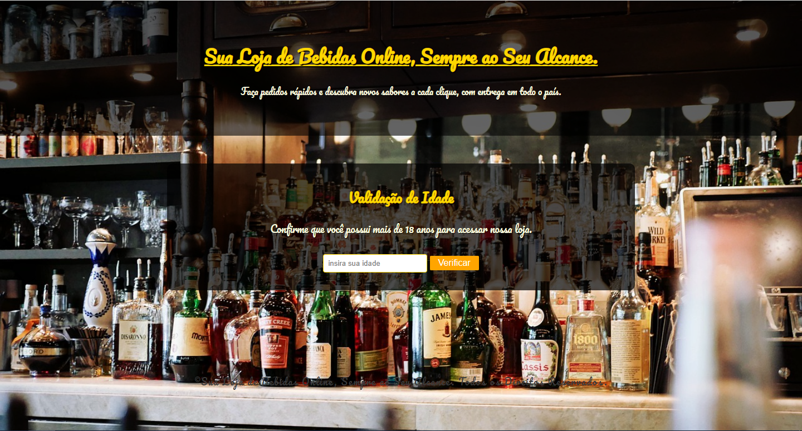
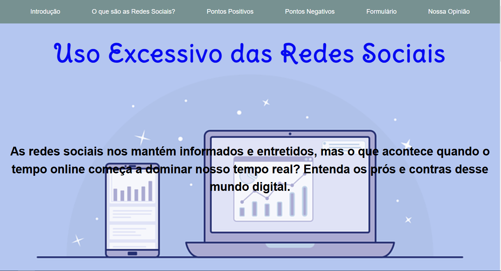

Alexandre Silva de Souza
Sou um Estudante de Programação Web no Instituto da Oportunidade Social a caminho de me tornar um programador front-end.
Sou um Estudante de Programação Web no Instituto da Oportunidade Social a caminho de me tornar um programador front-end.
Este Projeto tem por finalidade apresentar quatro mulheres que foram muito importantes para a história da Tecnologia no Brasil.

Neste Trabalho apresento um site que possui uma validação de idade funcional, que enviará para diferentes sites dependendo de qual informação o usuário colocar.
Este projeto tem por finalidade apresentar um site sobre o Uso Excessivo das redes sociais, contendo seus prós e contras das redes sociais no cotidiano das pessoas.
